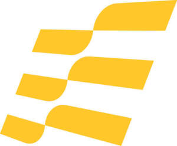

Trade Mark Journal No.2025/033 15 August 2025
UK00004239640 25 July 2025 (6,7,9,17,19,35,37,39,40,41,42)
Mark 1

Mark 2
- Class 6
- Common metals and their alloys, ores; Metal materials for building and construction; Transportable buildings of metal; Non-electric cables and wires of common metal; Small items of metal hardware; Metal containers for storage or transport; Access chamber covers (Metallic -); Access platforms [scaffolding] of metal; Air hose reels of metal [non-mechanical]; Airlock chambers of metal; Anchor chains of metal; Anchor plates; Anchorage devices of metal; Anchors; Bars for metal railings; Bridges [structures] of metal; Building and construction materials and elements of metal; Building components of metal; Building frameworks of metal; Building structures of metal; Buoys (Mooring -) of metal; Cable couplings (Non-electric -) of metal; Cables, wires and chains, of metal; Casings of metal; Chains of metal; Diving platforms of metal; Floating containers of metal; Floating metal docks; High-pressure pipelines (of metal); Inspection chambers made of metal; Inspection covers of metal; Joints for pipes (Metal -); Joints for tubes (Metal -); Lifting slings of metal for handling loads; Load handling (Harnesses of metal for -); Pilings of metal; Pipework of metal; Pressure actuated rings [metal]; Racks [structures] of metal; Structures of metal; Suspension clamps of metal; Transportable structures of metal; Valve assemblies of metal [other than parts of machines]; Valves of metal, other than parts of machines; Casings of metal for oil wells and gas wells; Mooring buoys of metal; Offshore drilling platforms [metal]; Metal pipes for liquid and gas transfer; Pipes, tubes and hoses, and fittings therefor, including valves, of metal; Articles of metal for use in the drilling of oil wells or gas wells; metal structures; metal decking; offshore metal structures and platforms for use in the installation, operation, maintenance, decommissioning and removal of oil wells, gas wells, subsea infrastructure and offshore infrastructure; subsea metal structures and platforms for use in the installation, operation, maintenance, decommissioning and removal of oil wells, gas wells, offshore and subsea infrastructure; metal structures and platforms for use in the installation, operation, maintenance, decommissioning and removal of oil wells or gas wells or oil fields or gas fields, including on-shore, marine or off-shore oil wells or gas wells; subsea structures of metal; offshore structures of metal; cellar deck centralisers for use in the drilling of oil wells or gas wells; metal conductor guides for use in the drilling of oil wells or gas wells; metal conductor guide arrays for use in the drilling of oil wells or gas wells; metal well conductors for use in the drilling of oil wells or gas wells; metal centralisers for use in the drilling of oil wells or gas wells; adjustable metal conductor guide centralisers for use in the drilling of oil wells or gas wells; remotely adjustable metal conductor guide centralisers for use in the drilling of oil wells or gas wells; metal conductor guide centralisers for use in the drilling of oil wells or gas wells; subsea riser connectors of metal; metal support systems for use with metal conductors for cement installation for oil wells or gas wells; metal support systems for cement installation for oil wells or gas wells; seals of metal for use in the drilling of oil wells or gas wells; metal valves and seals for use with wellheads; wellheads for use in the drilling of oil wells or gas wells; metal valves for controlling the flow of fluids and gases in pipelines; regulators [valves] of metal other than parts of machines; platforms of metal for the installation and removal of wells and offshore infrastructure; metal hubs for wellheads; wellheads of metal; metal flanges; metallic drill strings and pipes for use in the drilling of oil wells or gas wells; metallic connectors and fittings for drill strings and pipes for use in the drilling of oil wells or gas wells; hydraulic connectors for wellheads; rigless recovery towers for use in the severance, decommissioning and recovery of onshore and offshore energy infrastructure and nuclear energy infrastructure; junctions of metal for joining a mast to a piling; junctions of metal for connection to subsea metallic structures; supporting structures of metal for wind turbines; supporting structures of metal for tide water turbines; Subsea metallic anchoring hardware for mooring vessels; anchor chains of metal; anchor channels of metal; anchor flanges of metal; anchor lugs of metal; anchor plates of metal; anchoring devices of metal; anchors of metal; boat anchors of metal; mooring lines and tethers and associated release mechanisms; parts and fittings relating to the aforesaid goods.
- Class 7
- Machine tools, power-operated tools; Motors and engines, except for land vehicles; Machine coupling and transmission components, except for land vehicles; Abrading tools for use with machines; Access platforms [mechanical]; Actuators for mechanisms; Actuators for valves; Attachments for excavators; Attachments for cranes; Barrels for use with boring machines; Barrels for use with drilling rigs; Barrels for use with drilling machines; Battering ram [hydraulic]; Bearings and bushings [machine parts]; Bits for mining machines; Boring machines; Clamping tools for holding piece parts during machining; Compressors as parts of machines, motors and engines; Construction machines; Controls (Hydraulic -) for machines, motors and engines; Controls (Pneumatic -) for machines, motors and engines; Core drilling bits; Couplings for machines; Couplings for pneumatic apparatus; Couplings of metal for hydraulic apparatus; Cranes; Crushing machines; Cutters being parts of machines; Cutting, drilling, abrading, sharpening and surface treatment machines and apparatus; Distribution pumps; Dredging machines; Drilling machines; Drilling rigs; Drilling rigs, floating or non-floating; Drilling rigs for drilling off-shore wells; Drives for valves; Elevating or lifting work platforms [including mobile]; Engine mufflers; Gantry cranes [bridge cranes]; Generators; Generators for wind turbines; Ground boring machines; Ground drilling apparatus [machines]; Ground surface finishing and compacting machines; Guides for machines; Hammering machines; Hydraulic rams; Hydraulic power tools; Hydraulic valves; Impact crushers [machines or parts of machines]; Impact drills [machines or parts of machines]; Impact enhancing tools for use in the drilling of oil wells and gas wells; Impact enhancing tools for use in the completion of oil wells and gas wells; Industrial cleaning machines; Industrial cutting machines; Laser welding apparatus; Laser welding machines; Laser cutting torches; Lifting and hoisting equipment, elevators and escalators; Machine coupling and transmission components (except for land vehicles); Machines and machine tools for treatment of materials and for manufacturing; Machines for drilling wells; Machines for handling nuclear fuels; Machines for metal working; Machines for pressure washing; Machines, machine tools, and power-operated tools and apparatus, for fastening and joining; Material production and processing machines; Marine propulsion units; Marine mounted dock cranes; Marine engines; Oil drilling rigs; Oil drilling tools; Pile drivers; Pile-extractors; Pile preparing devices [machines]; Pile raising devices [machines]; Pneumatic controls for machines, motors and engines; Power drills and bores; Power operated cutting tools; Pressure regulating apparatus being parts of machines; Process control units [hydraulic]; Process control units [mechanical]; Process control units [pneumatic]; Pumps, compressors and blowers; Rammers [machines]; Regulators for machines; Safety couplings for machines; Silencers; Silencers for motors and engines; Steerable drilling machinery for earth displacement; Steerable excavating machinery for earth displacement; Surface treatment machines; Transportation machines; Turbines for power generation; Valves; Vertical turbine pumps; Welding and soldering machines and equipment; Well drilling machines; Winches; Wind turbines; Earthmoving, construction, oil and gas extraction and mining equipment; Boring tools operated by machines; High pressure cleaning machines; Wind-powered electricity generators; Turbine blades for power generation; Turbine shafts [parts of machines]; drives for machines and motors; tools for holding and positioning members to be cut, all for use in renewable energy structures or oil or gas wells or oil or gas fields; water-jet cutting tools; cutting tools and water-jet cutting tools for use in oil or gas wells and oil or gas fields, including on-shore, marine or off-shore oil or gas wells and oil or gas fields; cutting tools and water-jet cutting tools for severance activities for on-shore, marine and off-shore and oil or gas wells and oil or gas fields; cutting, drilling, abrading, sharpening and surface treatment machines and apparatus for oil wells, gas wells and offshore and onshore renewable energy installations; machines for controlling the movement and position of remote underwater camera and camera systems; tools for use with oil wells or gas wells or oil fields or gas fields, including on-shore, marine or off-shore oil wells or gas wells; tools for use with metallic drill strings and pipes and metallic connectors and fittings for drill strings and pipes for use in the drilling of oil wells or gas wells; mechanical ramming apparatus; impact transmission devices for mechanical ramming apparatus; tools for tensioning and clamping drilling risers and wellheads; subsea cutting machines; water-jet cutting tools for use offshore; valve assemblies of metal [parts of machines]; blowout preventers for use in the drilling of oil wells or gas wells; tools for severance activities for on-shore, marine and off-shore oil wells or gas wells; cutting tools and saws for use in oil wells or gas wells or oil fields or gas fields, including on-shore, marine or off-shore oil wells or gas wells; cutting tools and saws for severance activities for on-shore, marine and off-shore oil wells or gas wells; recovery towers (hydraulic) for use in the severance, decommissioning and recovery of onshore and offshore energy infrastructure and nuclear energy infrastructure; grippers of metal for use in connecting drilling rigs to pipes in subsea well installation, maintenance and decommissioning; laser cutting machines; laser welding machines; laser ablation apparatus; laser cutting machines, welding machines and ablation apparatus for cutting subsea infrastructure and subsea wells; mechanical pile-driving equipment; double-acting hammers; pile driving rigs; mechanical pile-driving equipment, namely, offshore and onshore hydraulic hammers, hydraulic underwater hammers, steam hammers, air hammers, double-acting hammers, pile driving rigs, pile hammers, winches, hoses, power packs; impact transfer devices for mechanical pile-driving equipment, namely, pile caps, hammer cushions, rebound rings, guide rings, anvils; double-impact hammers; machinery for soil and hydraulic engineering, namely, scrapers, cable crane scrapers, tracked scrapers and crawler carriers; noise reduction mufflers and noise reduction skirts for use with hammers and pile drivers; christmas trees; christmas trees to provide flow control on oil and gas wells; parts and fittings relating to the aforesaid goods.
- Class 9
- Scientific, research, navigation, surveying, photographic, audiovisual, optical, weighing, measuring, signalling, detecting, testing and inspecting apparatus and instruments; Apparatus and instruments for recording, transmitting, reproducing or processing sound, images or data; Recorded and downloadable media, blank digital or analogue recording and storage media; Computers and computer peripheral devices; Podcasts; downloadable podcasts; audio recordings; audiovisual recordings; downloadable educational media; downloadable electronic publications; videocasts; downloadable videocasts; electronic publications; multi-media recordings; pre-recorded films; Measuring, detecting, monitoring and controlling equipment; Controllers and regulators; Audio signal range expanders; Artificial intelligence software for analysis; Application software; Computer programs, downloadable; Data processing programs; Data processing software; Software for monitoring, analysing, controlling and running physical world operations; System and system support software, and firmware; Data processing equipment and accessories (electrical and mechanical); Data capture apparatus; Digital signal processing apparatus; Electronic communication equipment and instruments; Valve amplifiers; Alarm signalling transmitters; Image transmitting apparatus; Marine communication apparatus; Noise cancelling apparatus; Noise suppression apparatus; Information storage apparatus [electric or electronic]; Readers [data processing equipment]; Endoscopic equipment for industrial purposes; Power packs [batteries]; Borescopes; Lasers; Computer hardware for the collection of positioning data; Electronic navigational and positioning apparatus and instruments; Nautical apparatus and instruments; Navigational buoys; Navigational instruments; Sensors for determining position; Satellite navigational systems; Data loggers and recorders; Light Detection and Ranging [LIDAR] apparatus; Geophysical research apparatus; Geoseismic apparatus; apparatus for testing, measuring, monitoring and control purposes; apparatus for recording data on the performance of oil wells and gas wells; computer hardware and computer software; data carriers; data processing equipment; audio and video receivers and transmitters; remote control apparatus; remote control apparatus for the operation of subsea and offshore drilling, cutting and mining apparatus; digital cameras for industrial use; endoscopy cameras for industrial purposes; cameras for use in the energy generation industry; underwater cameras and underwater camera systems; control systems and instrumentation for use with underwater cameras, underwater camera systems and underwater lights; power supply units for hydraulic or pneumatic machines; mechanical, electric, hydraulic and pneumatic control apparatus; electro-technical apparatus for monitoring and regulating hydraulic or pneumatic machines; apparatus for controlling pressure; apparatus for measuring pressure; cathodic tubes; cathodic protection apparatus; cathodic anti-corrosion apparatus; mechanical, electrical, hydraulic or pneumatic control apparatus, namely, monitors and documentation systems comprised of sensors for differential pressure, oil pressure, temperature, voltage, amperage, oil level and output devices; electrotechnical controllers for hammers and power packs; radar apparatus and proximity sensors; electrical and electronic instruments and apparatus for logging data; software for remote diagnostics; remote monitoring apparatus and instruments; transmitters and receivers for positioning systems; transmitters and receivers for positioning and alignment of piles, flanges and hammers; process control instruments and units; sensors, detecting and monitoring and controlling equipment; Apparatus for monitoring underwater structures; instrumentation for monitoring underwater structures; motion logging devices; riser monitoring systems; data control pods; electrical apparatus for corrosion control; noise reduction apparatus; parts and fittings relating to the aforesaid goods.
- Class 17
- Flexible pipes, tubes and hoses, not of metal; Acoustic insulation articles and materials; Articles made of rubber for sealing; Barriers for protection against heat; Barriers for protection against sound; Casings of rubber for pipes and tubes; Caulking compounds; Chemical compositions for preventing leaks; Compositions to prevent the radiation of heat; Compounds for jointing; Compressed air pipe fittings, not of metal; Connectors (Non-metallic -) for pipes and tubes; Fire resistant and fire preventive articles and materials; Flexible pipes, tubes, hoses and fittings therefor (including valves), and fittings for rigid pipes, all non-metallic; Gaskets; Hoses; Industrial coatings [insulating]; Inflatable articles for sealing enclosed chambers to allow cutting and welding; Inflatable articles for sealing pipes to allow cutting and welding; Insulating coatings; Insulating materials for insulation against heat; Insulating materials for insulation against sound; Insulation for pipes; Insulation and barrier articles and materials; Jackets (Pipe -), not of metal; Joint sealing compounds; Junctions, not of metal, for pipes; Pipe insulation; Seals, sealants and fillers; Shock-absorbing and packing materials, vibration dampers; Sleeves of rubber for protecting parts of machinery; Sound dampening blankets; Sound proofing materials; Structures (non-metallic -) for noise abatement [soundproofing]; Structures (non-metallic -) for noise absorption [insulation]; Thermal insulating articles; Thermal insulating materials; Valves of rubber; Waterproofing and moisture proofing articles and materials; Couplings; Thermal insulation articles and materials; inflatable articles for sealing pipes, wellbores and chambers to prevent air escaping; sealing and insulating materials for pipework in offshore, onshore and subsea energy infrastructure; buoyancy modules for supporting risers; parts and fittings relating to the aforesaid goods.
- Class 19
- Materials, not of metal, for building and construction; Rigid pipes, not of metal, for building; Asphalt, pitch, tar and bitumen; Transportable buildings, not of metal; Access covers (Non-metallic -); Building and construction materials and elements made of pitch, tar, bitumen or asphalt; Building and construction materials and elements made of sand, stone, rock, clay, minerals and concrete; Building and construction materials and elements made of wood and artificial wood; Buildings, not of metal; Cement; Concrete; Concrete pipes; Concrete piles; Construction materials with soundproofing qualities, not of metal; Expansion joints of non-metallic materials for use in construction; Fire resistant collars (Non-metallic -) for pipes; Fire retardant panels (Non-metallic -) for use in construction; Floating docks, not of metal, for mooring boats; Forms (Non-metallic -) for concrete; Foundry moulds, not of metal; Grouting compounds; Industrial concrete for use in civil engineering works; Non-metal floating docks; Non-metal rails; Non-metallic building materials; Non- metallic ramps; Non-metallic ramps for use with scaffolding; Non-metallic transportable structures; Pilings, not of metal; Pipes made of cement; Portable non-metal buildings; Posts of non-metallic materials; Preformed concrete building elements; Reinforcing bars, not of metal; Rigid pipes and valves therefor, non-metallic; Bridge units [not of metal]; Civil engineering structures (Non-metallic - ); Non-metal barricades; Scaffolding, not of metal; Fireproof seals in the nature of building materials; filling cement; materials, not of metal, for the construction of onshore, offshore and subsea engineering infrastructures; materials, not of metal, for the construction of oil wells and gas wells; materials, not of metal, for the construction of onshore and offshore renewable energy infrastructures; parts and fittings relating to the aforesaid goods.
- Class 35
- Advertising; Business management, organization and administration; Office functions; Advice relating to personnel management; Advice relating to the organisation and management of business; Advisory services relating to the purchase of goods on behalf of others; Arranging and conducting of commercial exhibitions and shows; Arranging of trading transactions and commercial contracts; Assistance and consultancy services in the field of business management of companies in the energy sector; Business administrative services for the relocation of personnel; Business analysis; Business and commercial information services; Business consultancy services relating to data processing; Collection of data; Compilation of data; Computer database management; Computerised inventory control; Conducting of commercial events; Consultancy and advisory services relating to personnel management; Dissemination of business information; Economic forecasting and analysis; Human resources management and recruitment services; Management advice relating to the placing of staff; Organization of events, exhibitions, fairs and shows for commercial, promotional and advertising purposes; Personnel management; Placement of temporary personnel; Presentation of goods and services; Procurement services; Personnel recruitment; Management advice relating to the recruitment of staff; Conducting, arranging and organizing trade shows and trade fairs for commercial and advertising purposes; Business project management services for construction projects; Data processing, systematisation and management; Market analysis and research; Retail and online retail services connected with the sale of metal structures, metal structures (onshore and offshore) for use in the oil industry, metal structures (onshore and offshore) for use in the gas industry, metal structures (onshore and offshore) for use in the renewable energy industry, transportable buildings, cables, wires, chains, metal containers for storage or transport, access chamber covers, access platforms, air hose reels, airlock chambers, anchors, anchor plates and chains, mooring lines and tethers and associated release mechanisms, bridges, buoys, cable couplings, diving platforms, floating metal docks, high-pressure pipelines, inspection chambers, joints for pipes and tubes, lifting and hoisting apparatus, pilings, pipework, valves, valve assemblies, drilling platforms, articles of metal for the use in drilling of oil and gas wells, subsea metal structures, metal conductor guides, subsea riser connectors of metal, seals of metal, wellheads, regulators, metal hubs for wellheads, flanges, christmas trees, rigless recovery towers, junctions of metal, supporting structures for wind turbines and subsea metallic anchoring hardware; Retail and online retail services connected with the sale of machine tools, power operated tools, motors and engines, machine coupling and transmission components, compressors, abrading tools, access platforms, actuators, bearings and bushings [machine parts], cranes, attachments for cranes, boring machines and equipment, drilling machines and equipment, ramming equipment, mining machines and equipment, clamping tools, cutters, cutting machines and apparatus, drilling machines and apparatus, sharpening machines and apparatus, surface treatment machines and apparatus, pumps, dredging machines, drilling rigs, work platforms, crushing machines, generators, earth moving and earth preparation machines and equipment, hammering equipment and hammering machines, industrial cleaning machines, welding and laser welding machines and apparatus, marine propulsion units, oil drilling tools, gas drilling tools, piledrivers and piledriving equipment, water-jet cutting equipment, tensioners, recovery towers, grippers of metal, wind turbines, onshore and offshore structures for use in the generation of renewable energy, piledriving rigs, winches, power packs, noise reduction apparatus, noise reduction mufflers and noise reduction skirts for use with hammers and piledrivers; Retail and online retail services connected with the sale of podcasts, audio and audiovisual recordings, educational media, electronic publications, videocasts, multi-media recordings, artificial intelligence software for analysis, data processing programs, software for monitoring physical world operations, software for analysing physical world operations, software for controlling and running physical world operations, data processing equipment and accessories (electrical and mechanical), data readers, electronic navigational and positioning apparatus and instruments, data loggers and recorders, satellite navigational systems, Light Detection and Ranging [LIDAR] apparatus, software for remote diagnostics, remote monitoring apparatus and instruments, scientific apparatus and instruments, research apparatus and instruments, navigation apparatus and instruments, surveying apparatus and instruments, photographic apparatus and instruments, audiovisual apparatus and instruments, optical apparatus and instruments, weighing apparatus and instruments, measuring apparatus and instruments, signalling apparatus and instruments, detecting apparatus and instruments, testing apparatus and instruments, inspecting apparatus and instruments, apparatus and instruments for recording sound, apparatus and instruments for transmitting sound, apparatus and instruments for reproducing or processing sound, apparatus and instruments for recording images, apparatus and instruments for transmitting images, apparatus and instruments for reproducing or processing images, apparatus and instruments for recording data, apparatus and instruments for transmitting data, apparatus and instruments for reproducing or processing data, computers and computer peripheral devices, controllers, regulators, data capture apparatus, valve amplifiers, alarm signalling transmitters, noise cancelling and noise suppression apparatus, endoscopic equipment, borescopes, lasers, nautical apparatus and instruments, geophysical research apparatus, geoseismic apparatus, remote control apparatus, underwater cameras, underwater lights, power supply units for hydraulic or pneumatic machines, cathodic anti- corrosion apparatus, radar apparatus and proximity sensors and apparatus for monitoring structures (onshore, offshore and subsea); Retail and online retail services connected with the sale of flexible pipes, flexible tubes, flexible hoses, acoustic insulation articles and materials, barriers for protection against heat and sound, casings for pipes and tubes, inflatable articles for sealing enclosed chambers to allow cutting and welding, pipe jackets and pipe insulation, vibration dampers, structures for noise abatement, inflatable articles for sealing pipes and wellbores, inflatable articles for sealing chambers, sealing and insulating materials for pipework; Retail and online retail services connected with the sale of rigid pipes, concrete piles, expansion joints, civil-engineering structures, barricades and scaffolding, materials for building and construction, asphalt, tar, bitumen, cement, concrete, construction materials with soundproofing qualities, fire resistant collars, ramps, foundry moulds, grouting compounds and reinforcing bars; information, advisory and consultancy services relating to all the aforesaid.
- Class 37
- Construction services; Mining extraction, oil and gas drilling; building, construction and demolition services; oil and gas drilling; installation, cleaning, repair and maintenance services for offshore, onshore and subsea structures in the oil, gas and renewable energy sector; rental of tools, plant and equipment for installation, construction, removal, inspection, repair, maintenance, cleaning, decommissioning, recovery and demolition; drilling; oil well and gas well drilling and piling services; oil well and gas well piling and conductor installation services; wellbore cleaning services; industrial cleaning of offshore, onshore and subsea structures for the renewal energy industry; industrial cleaning of offshore, onshore and subsea structures for the oil and gas industry; industrial cleaning of offshore, onshore and subsea structures for the oil and gas industry; cleaning of metal structures; cleaning of oil and gas pipework; dismantling and removal services; marine growth cleaning services; hot tapping services of metal valves on wellheads; pressure tapping services of metal valves on wellheads; installation of equipment for oil wells and gas wells; underwater construction, installation and repair; offshore construction; machinery repair and maintenance; pipe installation services; pile driving services; servicing of pipelines; servicing of manufacturing machines and apparatus; servicing of equipment used in the installation and operation of oil and gas wells and renewable energy structures; servicing of machine tools; servicing of christmas trees for use in the oil and gas industry; pile installation services; installation of offshore pipelines, oil pipelines and pipework systems; constructing decks; construction supervision of civil engineering projects; oil well casing, tubing, and drill pipe installation; stabilisation of the sea bed by cement injection (Services for the -); stabilisation of soil by cement injection (Services for the -); stabilisation of earth by cement injection (Services for the -); underwater dredging; soil dredging; excavation services; marine lifting services; hire of lifting apparatus; construction of dams and cofferdams; installation, maintenance, repair, decommissioning and servicing of metal structures, metal structures (onshore and offshore) for use in the oil industry, metal structures (onshore and offshore) for use in the gas industry, metal structures (onshore and offshore) for use in the renewable energy industry, transportable buildings, mooring systems, cables, wires, chains, metal containers for storage or transport, access chamber covers, access platforms, air hose reels, airlock chambers, anchors and marine anchors, anchor plates and chains, mooring lines and tethers and associated release mechanisms, bridges, buoys, cable couplings, diving platforms, floating metal docks, high-pressure pipelines, inspection chambers, joints for pipes and tubes, lifting and hoisting apparatus, pilings, pipework, valves, valve assemblies, drilling platforms, articles of metal for the use in drilling of oil and gas wells, subsea metal structures, metal conductor guides, subsea riser connectors of metal, seals of metal, wellheads, regulators, metal hubs for wellheads, flanges, christmas trees, rigless recovery towers, junctions of metal, supporting structures for wind turbines, offshore wind turbine platforms and subsea metallic anchoring hardware; installation, maintenance, repair, decommissioning and servicing of machine tools, power operated tools, motors and engines, machine coupling and transmission components, compressors, abrading tools, access platforms, actuators, bearings and bushings [machine parts], cranes, attachments for cranes, boring machines and equipment, drilling machines and equipment, ramming equipment, mining machines and equipment, clamping tools, cutters, cutting machines and apparatus, drilling machines and apparatus, sharpening machines and apparatus, surface treatment machines and apparatus, pumps, dredging machines, drilling rigs, work platforms, crushing machines, generators, earth moving and earth preparation machines and equipment, mechanical rock breaking devices, rock crushers, excavators, scrapers, hammering equipment and hammering machines, guide rings, industrial cleaning machines, welding and laser welding machines and apparatus, marine propulsion units, oil drilling tools, gas drilling tools, piledrivers and piledriving equipment, water-jet cutting equipment, tensioners, recovery towers, grippers of metal, wind turbines, onshore and offshore structures for use in the generation of renewable energy, piledriving rigs, winches, power packs, noise reduction apparatus, noise reduction mufflers and noise reduction skirts for use with hammers and piledrivers; installation, maintenance, repair, decommissioning and servicing of scientific apparatus and instruments, research apparatus and instruments, navigation apparatus and instruments, surveying apparatus and instruments, photographic apparatus and instruments, optical apparatus and instruments, weighing apparatus and instruments, measuring apparatus and instruments, signalling apparatus and instruments, detecting apparatus and instruments, testing apparatus and instruments, inspecting apparatus and instruments, computers and computer peripheral devices, controllers, regulators, data capture apparatus, valve amplifiers, alarm signalling transmitters, noise cancelling and noise suppression apparatus, endoscopic equipment, borescopes, lasers, geophysical research apparatus, geoseismic apparatus, remote control apparatus, underwater lights, sensors for oil pressure, temperature sensors, proximity sensors and apparatus for monitoring structures (onshore, offshore and subsea); installation, maintenance, repair, decommissioning and servicing of flexible pipes, flexible tubes, flexible hoses, acoustic insulation articles and materials, barriers for protection against heat and sound, casings for pipes and tubes, inflatable articles for sealing enclosed chambers to allow cutting and welding, pipe jackets and pipe insulation, vibration dampers, structures for noise abatement, inflatable articles for sealing pipes and wellbores, inflatable articles for sealing chambers, sealing and insulating materials for pipework; installation, maintenance, repair, decommissioning and servicing of rigid pipes, concrete piles, expansion joints, civil-engineering structures, barricades and scaffolding; rental of metal structures, metal structures (onshore and offshore) for use in the oil industry, metal structures (onshore and offshore) for use in the gas industry, metal structures (onshore and offshore) for use in the renewable energy industry, transportable buildings, cables, wires, chains, metal containers for storage or transport, access chamber covers, access platforms, air hose reels, airlock chambers, anchors, anchor plates and chains, mooring lines and tethers and associated release mechanisms, bridges, buoys, cable couplings, diving platforms, floating metal docks, high-pressure pipelines, inspection chambers, joints for pipes and tubes, lifting and hoisting apparatus, pilings, pipework, valves, valve assemblies, drilling platforms, articles of metal for the use in drilling of oil and gas wells, subsea metal structures, metal conductor guides, subsea riser connectors of metal, seals of metal, wellheads, regulators, metal hubs for wellheads, flanges, christmas trees, rigless recovery towers, junctions of metal, supporting structures for wind turbines and subsea metallic anchoring hardware; rental of machine tools, power operated tools, motors and engines, machine coupling and transmission components, compressors, abrading tools, access platforms, actuators, bearings and bushings [machine parts], cranes, attachments for cranes, boring machines and equipment, drilling machines and equipment, ramming equipment, mining machines and equipment, clamping tools, cutters, cutting machines and apparatus, drilling machines and apparatus, sharpening machines and apparatus, surface treatment machines and apparatus, pumps, dredging machines, drilling rigs, work platforms, crushing machines, generators, earth moving and earth preparation machines and equipment, mechanical rock breaking devices, rock crushers, excavators, scrapers, hammering equipment and hammering machines, guide rings, industrial cleaning machines, welding and laser welding machines and apparatus, marine propulsion units, oil drilling tools, gas drilling tools, piledrivers and piledriving equipment, water-jet cutting equipment, tensioners, recovery towers, grippers of metal, wind turbines, onshore and offshore structures for use in the generation of renewable energy, piledriving rigs, winches, power packs, noise reduction apparatus, noise reduction mufflers and noise reduction skirts for use with hammers and piledrivers; rental of apparatus and instruments for recording sound, apparatus and instruments for transmitting sound, apparatus and instruments for reproducing or processing sound, apparatus and instruments for recording images, apparatus and instruments for transmitting images, apparatus and instruments for reproducing or processing images, apparatus and instruments for recording data, apparatus and instruments for transmitting data, apparatus and instruments for reproducing or processing data, underwater cameras, underwater lights, power supply units for hydraulic or pneumatic machines, cathodic anti-corrosion apparatus and radar apparatus, rental of flexible pipes, flexible tubes, flexible hoses, acoustic insulation articles and materials, barriers for protection against heat and sound, casings for pipes and tubes, inflatable articles for sealing enclosed chambers to allow cutting and welding, pipe jackets and pipe insulation, vibration dampers, structures for noise abatement, inflatable articles for sealing pipes and wellbores, inflatable articles for sealing chambers, sealing and insulating materials for pipework; rental of rigid pipes, concrete piles, expansion joints, civil-engineering structures, fire resistant collars, ramps, foundry moulds, barricades and scaffolding; information, advisory and consultancy services relating to all the aforesaid.
- Class 39
- Transport; Packaging and storage of goods; Travel arrangement; Power supply and distribution; Transport by pipeline; Marine transport; Navigation (positioning, and route and course plotting); Transport and delivery of goods; Provision of shipborne storage services; Storage of energy and fuels; Storage of ships; Provision of moorings; distribution of renewable energy; removal services for onshore and offshore energy generation equipment and apparatus; commercial removal services for onshore and offshore energy generation equipment and apparatus; overseas removal services for onshore and offshore energy generation equipment and apparatus; industrial removal services [transportation] for onshore and offshore energy generation equipment and apparatus; storage services onshore and offshore energy generation equipment and apparatus; underwater recovery services; charter of sea vessels; chartering of marine vessels; storage of spooling; transmission of oil or gas through pipelines; transportation of metal structures used for the installation and removal of oil wells and gas wells; transportation of subsea metal structures; transportation of metal structures used offshore for energy generation; rental of surveillance drones; rental of self-propelled lifting platforms for lifting purposes; storage information, transportation information and packaging; rental of satellite navigational systems, navigation apparatus and instruments, nautical apparatus and instruments; information, advisory and consultancy services relating to all the aforesaid.
- Class 40
- Heat treatment of metals; heat treatment of polymers; heat treatment of composite materials; surface treatment of metals to prevent corrosion; anodic surface treatment of metals; Energy production; Cutting services for onshore and offshore oil wells or gas wells or oil fields or gas fields; Cutting services for onshore or offshore renewal energy infrastructures; laser cutting services; rental of cutting equipment; rental of laser cutting machines, subsea laser cutting machines, laser welding machines and laser ablation apparatus; rental of cutting equipment for oil wells or gas wells or oil fields or gas fields, including onshore, marine or offshore oil wells or gas wells; rental of subsea cutting equipment; rental of subsea jetting equipment; custom manufacture and construction of equipment and metal structures for onshore and offshore energy infrastructures; metal cutting; subsea metal cutting; steel cutting; grit blasting services; cutting of metal; cutting of cemented casings for oil wells or gas wells or oil fields or gas fields, including onshore, marine or offshore oil wells or gas wells; welding services; friction welding services; remotely controlled hydraulic powered friction welding services; rental of welding apparatus; rental of hydraulic welding apparatus; rental of remotely controlled hydraulic powered friction welding apparatus; subsea jetting services; high pressure jetting services; rental of high pressure jetting equipment; cleaning treatment and transformation of materials for energy production; rental of equipment for the treatment and transformation of materials for energy production and for custom manufacturing; gas production services; metal treatment services; metal plating and laminating; treatment of metal parts to prevent corrosion; rental of equipment for the treatment of metal, including plating and laminating; rental of generators; assembly for others of mechanical pile-driving equipment, impact transfer devices for mechanical pile-driving equipment, cranes, mechanical rock-breaking devices, excavators, machinery for soil and hydraulic engineering, steam engines, pumps, compressors, valves as mechanical, electrical, hydraulic or pneumatic control apparatus, and electrotechnical apparatus; custom manufacture and construction of equipment and metal structures for subsea or offshore use in the installation of piles and monopiles; pneumatic abrasion of services; rental of power supply units for hydraulic or pneumatic machines, cathodic anticorrosion apparatus; information, advisory and consultancy services relating to all the aforesaid.
- Class 41
- Rental of podcasts, audio and audiovisual recordings, educational media, electronic publications, videocasts, multi-media recordings, photographic apparatus and instruments, audiovisual apparatus and instruments, apparatus and instruments for recording sound, apparatus and instruments for reproducing or processing sound, apparatus and instruments for recording images, apparatus and instruments for reproducing or processing images, apparatus and instruments for recording data, apparatus and instruments for reproducing or processing data and underwater cameras.
- Class 42
- Technological services and research and design relating thereto; Industrial analysis, industrial research and industrial design services; Quality control and authentication services; Design and development of computer hardware and software; Technical data analysis; design services; engineering design services; structural engineering design services; industrial engineering design services; civil engineering design services; civil infrastructure design services; engineering project management services; engineering services for the design of machinery; engineering services for the design of structures; custom design services; services for monitoring industrial processes; design and development of industrial products; design and development of engineering products; project engineering services; technical project planning; technical project planning in the field of engineering; civil engineering planning services; assessment of structures in the field of engineering; assessment and planning [in the field of engineering] of building, constructing, and decommissioning instruments and apparatus for oil wells and gas wells; engineering services for the analysis of structures; engineering services for the analysis of machinery; technological engineering analysis; technical testing; testing of apparatus; safety testing of pressure equipment and installations; pressure testing of apparatus; analysis and testing services relating to engineering apparatus; engineering consultancy relating to design; analysis and testing services for the oil industry; certification [quality control]; quality testing of products for certification purposes; testing of apparatus in the field of engineering for certification purposes; technical services for oil wells or gas wells or oil fields or gas fields, including on-shore, marine or off shore oil wells or gas wells; design of tools for use with oil wells or gas wells; technical services relating to severance activities and cutting services for on-shore, marine and off-shore oil wells or gas wells or oil fields or gas fields; technical supervision and inspection; technical inspection services; inspection of apparatus; underwater structural inspection services; remote inspection services; remote inspection services for onshore and offshore energy infrastructures; pipeline inspection services; inspection of oil fields; inspection and testing via industrial rope access; monitoring and observation of underwater operations; monitoring and observation of seabed and subsea equipment; structural surveys and monitoring of onshore, offshore and subsea energy infrastructure; preparation and provision of engineering reports; preparation and provision of technical reports; preparation and provision of technological research reports; preparation and provision of reports relating to technical project studies for construction projects; technical, design and engineering services relating to recovery towers and rigless recovery towers for use in the severance, decommissioning and recovery of oil and gas wells and offshore energy infrastructure; geological surveying; oil field and gas field surveying; marine surveying services; wellbore surveying services; surveying of oil wells and gas wells; surveying of subsea, onshore and offshore structures used in the oil, gas and renewable energy industry; geological test drilling; engineering design, project engineering and consultancy services in the field of nuclear decommissioning; engineering design, project engineering and consultancy services for the inspection and decommissioning of nuclear plant, buildings and infrastructure; technical supervision of laser cutting and remote-controlled robotic systems for nuclear plant dismantling; material testing; preparation of reports relating to decommissioning of nuclear plant, oil wells and gas wells; planning and consultancy in relation to foundation work and to earth moving and hydraulic engineering; technical planning and technical consultancy in the fields of structural foundation work and soil and hydraulic engineering; geotechnical investigations; geophysical investigations; geological surveying; geophysical surveying; engineering surveying; topographical surveying; marine surveying services; hydrographic surveying; surveying and exploration services; geological surveying; geological test drilling; analysis of geological samples; engineering project management services; engineering project management services in the assembly, operation and maintenance of offshore piledriving equipment; project management and development of hydraulic piledriving hammer solutions; project management services for the installation of subsea foundations; diagnostic services on the operation of piledrivers; diagnostic services for the installation and condition of monopiles and piles; recording data relating to the alignment, installation and maintenance of onshore and offshore energy infrastructure; preparation and provision of technological reports; Industrial analysis, industrial research and industrial design services for remote project and asset management, management of survey data and remote familiarisation and inspection of physical structures; Quality control and authentication services for remote project and asset management, management of survey data and remote familiarisation and inspection of physical structures; Computer services for the analysis of data for remote project and asset management, management of survey data and remote familiarisation and inspection of physical structures; Design and development of computer software for reading, transmitting and organising data for remote project and asset management, management of survey data and remote familiarisation and inspection of physical structures; Electronic data storage for remote project and asset management, management of survey data and remote familiarisation and inspection of physical structures; Platform as a Service [PaaS] and Software as a Service [SaaS] for remote project and asset management, management of survey data and remote familiarisation and inspection of physical structures; Platform as a Service [PaaS] and Software as a Service [Saas] featuring software for transmission of inspection, survey and asset images, inspection, survey and asset audio-visual content, measurements and survey data for remote project and asset management, management of survey data and remote familiarisation and inspection of physical structures; Providing temporary use of on-line non downloadable software for the transmission of inspection, survey and asset information in the field of remote project and asset management, management of survey data and remote familiarisation and inspection of physical structures; Providing temporary use of on-line non -downloadable software for the transmission of information relating to remote projects, survey data and subsea survey data; Conducting magnetic resonance imaging interpretation and analysis for the oil, gas, telecommunications, heritage, nuclear, energy and civil engineering sectors; Consultancy relating to technological services in the field of power and energy supply; 3D scanning services for remote project and asset management, management of survey data and remote familiarisation and inspection of physical structures; Preparation of reports relating to technical project studies for construction, engineering, operations and decommissioning projects; Scientific risk assessment for remote project and asset management, management of survey data and remote familiarisation and inspection of physical structures; Platform as a Service [PaaS] featuring software platforms for asset management to allow users to remotely tour company assets; Platform as a Service [PaaS] and Software as a Service [Saas] featuring software for the collation and integration of data for viewing and reporting for remote project and asset management, management of survey data and remote familiarisation and inspection of physical structures; rental of artificial intelligence software for analysis, data processing programs, software for monitoring physical world operations, software for analysing physical world operations, software for controlling and running physical world operations, data processing equipment and accessories (electrical and mechanical), data readers, electronic navigational and positioning apparatus and instruments, data loggers and recorders, Light Detection and Ranging [LIDAR] apparatus, software for remote diagnostics, remote monitoring apparatus and instruments, scientific apparatus and instruments, research apparatus and instruments, surveying apparatus and instruments, optical apparatus and instruments, weighing apparatus and instruments, measuring apparatus and instruments, signalling apparatus and instruments, detecting apparatus and instruments, testing apparatus and instruments, inspecting apparatus and instruments, computers and computer peripheral devices, controllers, regulators, data capture apparatus, valve amplifiers, alarm signalling transmitters, noise cancelling and noise suppression apparatus, endoscopic equipment, borescopes, lasers, nautical apparatus and instruments, geophysical research apparatus, geoseismic apparatus, remote control apparatus, sensors for oil pressure, temperature sensors, proximity sensors and apparatus for monitoring structures (onshore, offshore and subsea); information, advisory and consultancy services relating to all the aforesaid.
Acteon Group Operations (UK) Limited
Representative: Dummett Copp LLP